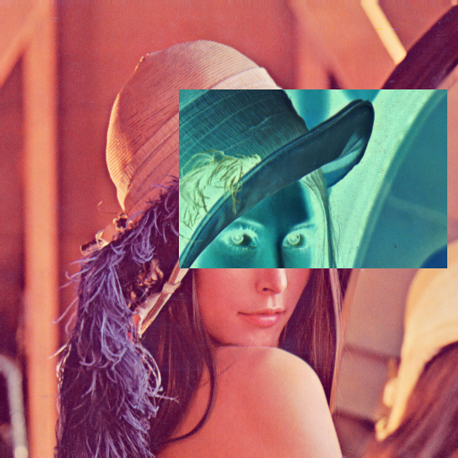
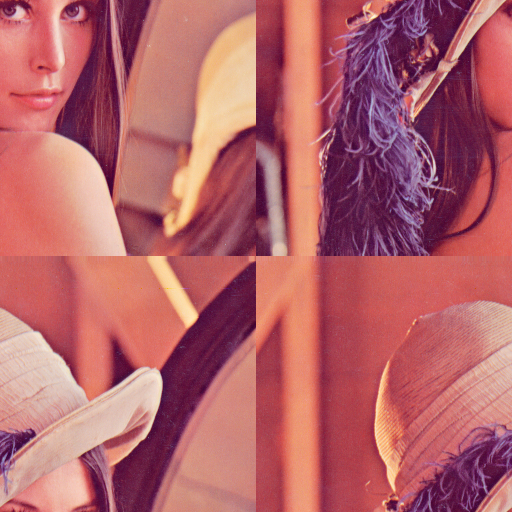
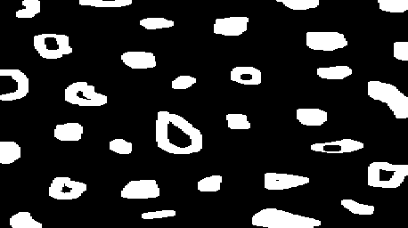
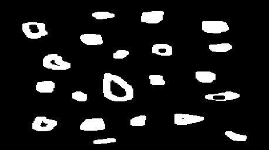
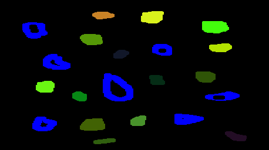
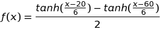
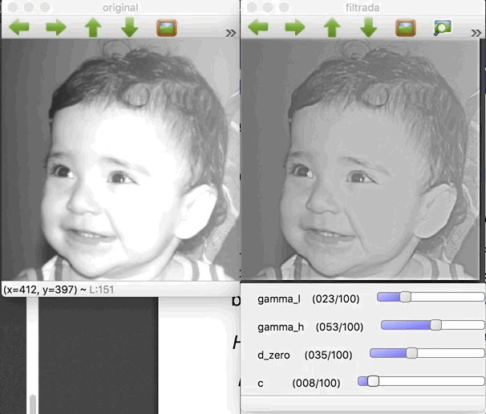
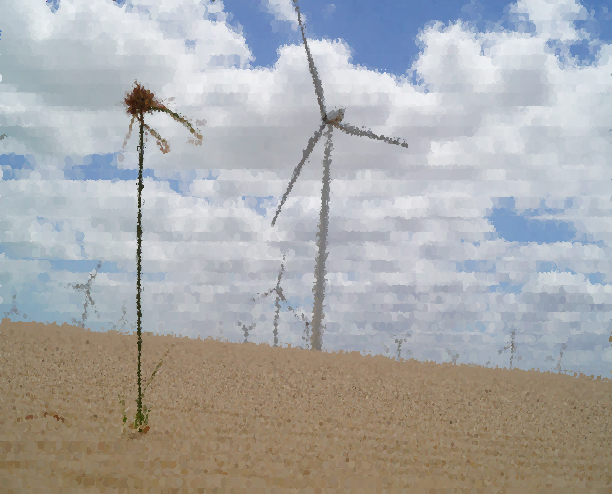

Digital Image Processing
This website is a showcase of small projects developed during the course of Digital Image Processing offered by Universidade Federal do Rio Grande do Norte, Department of Computer Engineering.
These exercises are based on the OpenCV tutorial provided by professor Agostinho Brito Jr (http://agostinhobritojr.github.io/tutoriais/pdi/).
OpenCV 2.4 has been used in this material.
Unit 1
In this unit, the following examples were developed:
- Negative of a region
- Swapping regions
- Counting bubbles with holes
- Histogram equalization
- Motion detection
- Laplacian of Gaussian
- Tilt shift
- Tilt shift of a video
Negative of a region

This is a typical "getting started" example to OpenCV, because it uses simple pixel manipulation in order to make a negative effect in a region of the given image.
To invert the color of a pixel, the formula used is color = 255 - color in each channel. To run this example: ./regions <img_path> <x1> <y1> <x2> <y2> where x1, y1, x2 and y2 the rectangular area to be turned into negative.
regions.cpp
#include <iostream>
#include <cstdlib>
#include <opencv2/opencv.hpp>
using namespace cv;
using namespace std;
#define CHECK_VALID_RANGE(x, dimension) if(x < 0 || x >= dimension) \
{cout << "Invalid value for "#x << endl; exit(1);}
int main(int argc, char** argv){
if (argc != 2 && argc != 6) {
cout << "usage: " << endl
<< "\t" << argv[0] << "<img_path>"
<< " // To get image dimensions" << endl
<< "\t" << argv[0] << "<img_path> <x1> <y1> <x2> <y2>"
<< " // To negative the rectangular area" << endl;
exit(1);
}
Mat image = imread(argv[1], CV_LOAD_IMAGE_COLOR);
if (!image.data)
cout << "Could not open " << argv[1] << endl;
int cols = image.cols;
int rows = image.rows;
cout << "###### Image dimensions ######" << endl
<< "Columns: " << cols << endl
<< "Rows: " << rows << endl
<< "##############################" << endl;
if (argc == 2) exit(0);
int x1 = atoi(argv[2]); CHECK_VALID_RANGE(x1, rows);
int y1 = atoi(argv[3]); CHECK_VALID_RANGE(y1, cols);
int x2 = atoi(argv[4]); CHECK_VALID_RANGE(x2, rows);
int y2 = atoi(argv[5]); CHECK_VALID_RANGE(y2, cols);
namedWindow(argv[1],WINDOW_AUTOSIZE);
for (int i = min(x1, x2); i < max(x1, x2); ++i) {
for (int j = min(y1, y2); j < max(y1, y2); ++j) {
image.at<Vec3b>(i,j)[0] = 255- image.at<Vec3b>(i,j)[0];
image.at<Vec3b>(i,j)[1] = 255- image.at<Vec3b>(i,j)[1];
image.at<Vec3b>(i,j)[2] = 255- image.at<Vec3b>(i,j)[2];
}
}
imshow(argv[1], image);
waitKey();
exit(0);
}
Swapping regions
This example consists of swapping the four regions of a picture, given a order passed by command line. For example, running ./swap_regions lenna.png 4 3 2 1 swaps the regions as follows, since the original sequence is 1 2 3 4 (left to right, top to bottom)

swap_regions.cpp
#include <iostream>
#include <cstdlib>
#include <opencv2/opencv.hpp>
using namespace cv;
using namespace std;
#define CHECK_VALID_RANGE(x) if (x < 0 || x > 3) \
{cout << "Invalid region number in sequence" << endl; exit(1);}
int main(int argc, char** argv){
if (argc != 6) {
cout << "usage: " << endl
<< "\t" << argv[0] << " <img_path> <sequence with 4 numbers from 1 to 4"
<< " separated by spaces>" << endl
<< "\tExample: " << argv[0] << " ../img/lenna.png 4 3 2 1" << endl
<< "\tThe sequence 1 2 3 4 is the original image, swapping these numbers"
<< " swaps the four regions of the image." << endl;
exit(1);
}
Mat image = imread(argv[1], CV_LOAD_IMAGE_COLOR);
if (!image.data)
cout << "Could not open " << argv[1] << endl;
int sequence[4];
for (int i = 0; i < 4; ++i) {
sequence[i] = atoi(argv[i+2]) - 1;
CHECK_VALID_RANGE(sequence[i]);
}
int rows = image.rows;
int cols = image.cols;
Rect rois[4] = {
Rect( 0, 0, rows/2, cols/2),
Rect(rows/2, 0, rows/2, cols/2),
Rect( 0, cols/2, rows/2, cols/2),
Rect(rows/2, cols/2, rows/2, cols/2)
};
namedWindow(argv[1],WINDOW_AUTOSIZE);
Mat3b swapped (rows, cols, Vec3b(0, 0, 0));
for (int i = 0; i < 4; ++i) {
Mat region (image, rois[ sequence[i] ]);
region.copyTo(swapped(rois[i]));
}
imshow(argv[1], swapped);
waitKey();
exit(0);
}
Counting bubbles with holes
This example makes use of floodFill, which consists of painting an area that has the same color, replacing it by another color. Here this technique is used for counting and labeling bubbles in a black and white picture. Besides that, in this algorithm, bubbles with holes are counted too.
Original image

No boundaries

Labeled

To run the program: ./bubbles <bubbles_img>. An example is illustrated above with an example as input. First we remove the bubbles that are in the boundaries because we can't know for sure that they have holes or not (in case this picture was taken from real objects), then we paint the bubbles and bubbles with holes are paint as blue (in RGB: 0, 0, 255).
One important aspect of the algorith below is that it runs on a BGR image, not greyscale. This is done to overcome the problem of having a limit of 255 bubbles on counting if the same thing was done in greyscale. In this implementation I allowed from BGR = (0,0,1) up until BGR = (50,255,255) for labeling. This way it is possible to count up to 3276799 bubbles. The blue channel was limited to 50 for allowing bubbles with holes to be painted full blue BGR = (255,0,0) and be distinguished from the others.
bubbles.cpp
#include <iostream>
#include <cstdlib>
#include <opencv2/opencv.hpp>
using namespace cv;
using namespace std;
inline void incrementColor(Vec3b &color) {
if (color[2] < 255) {
color[2]++;
} else if (color[1] < 255) {
color[1]++;
color[2] = 0;
} else if (color[0] < 50) {
color[0]++;
color[1] = 0;
color[2] = 0;
} else {
cout << "Max of bubbles for this algorithm is 3276799." << endl;
exit(1);
}
}
int main(int argc, char** argv){
if (argc != 2) {
cout << "usage:" << argv[0] << " <bubbles_image>" << endl
<< "\t where <bubbles_image> should be a black "
<< "and white image of bubbles" << endl;
exit(1);
}
Mat image;
image = imread(argv[1]);
if(!image.data) {
cout << "failed to open bolhas.png" << endl;
exit(1);
}
namedWindow("Original", WINDOW_AUTOSIZE);
imshow("Original", image);
Size imgSize = image.size();
Vec3b white;
white[0] = 255; white[1] = 255; white[2] = 255;
// First remove the bubbles in boundaries
// Loop through first and last line
for(int i = 0; i < imgSize.width; ++i) {
// First line
if (image.at<Vec3b>(0, i) == white) {
floodFill(image, Point(i, 0), Scalar(0, 0, 0));
}
// Last line
if (image.at<Vec3b>(imgSize.height-1, i) == white) {
floodFill(image, Point(i, imgSize.height-1), Scalar(0, 0, 0));
}
}
// Loop through first and last column
for(int i = 0; i < imgSize.height; ++i) {
// First column
if (image.at<Vec3b>(i, 0) == white) {
floodFill(image, Point(0, i), Scalar(0, 0, 0));
}
// Last column
if (image.at<Vec3b>(i, imgSize.width-1) == white) {
floodFill(image, Point(imgSize.width-1, i), Scalar(0, 0, 0));
}
}
namedWindow("noBoundaries", WINDOW_AUTOSIZE);
imshow("noBoundaries", image);
// Then first count bubbles with holes or not
unsigned num_bubbles = 0;
// Initial count color is [0,0,1]
Vec3b color;
color[0] = 0; color[1] = 0; color[2] = 1;
for (int i = 0; i < imgSize.height; ++i) {
for (int j = 0; j < imgSize.width; ++j) {
if (image.at<Vec3b>(i, j) == white) {
floodFill(image, Point(j, i),
Scalar(color[0], color[1], color[2]));
num_bubbles++;
incrementColor(color);
}
}
}
cout << "Number of bubbles = " << num_bubbles << endl;
// Now count bubbles with holes
unsigned num_bubbles_with_holes = 0;
Mat image_aux = image.clone();
color[0] = 0; color[1] = 0; color[2] = 1;
for (int i = 0; i < num_bubbles; ++i) {
unsigned num_pixels_bg_before =
floodFill(image_aux, Point(0, 0), Scalar(0, 0, 0));
Point first_pixel_with_color (0, 0);
for (int i2 = 0; i2 < imgSize.height; ++i2) {
for (int j = 0; j < imgSize.width; ++j) {
if (image_aux.at<Vec3b>(i2, j) == color) {
first_pixel_with_color = Point(j, i2);
break;
}
}
}
if (first_pixel_with_color.x == 0 &&
first_pixel_with_color.y == 0) {
cerr << "No pixel with this color found. Review algorithm." << endl;
exit(1);
}
unsigned num_pixels_with_color =
floodFill(image_aux, first_pixel_with_color,
Scalar(0, 0, 0));
unsigned num_pixels_bg_after =
floodFill(image_aux, Point(0, 0), Scalar(0, 0, 0));
if (num_pixels_bg_after > num_pixels_bg_before + num_pixels_with_color) {
num_bubbles_with_holes++;
floodFill(image, first_pixel_with_color,
Scalar(255, 0, 0));
} else {
floodFill(image, first_pixel_with_color,
Scalar(rand()%51, rand()%256, rand()%256));
}
incrementColor(color);
}
namedWindow("colored", WINDOW_AUTOSIZE);
imshow("colored", image);
cout << "Number of bubbles with holes = " << num_bubbles_with_holes << endl;
waitKey();
return 0;
}
Histogram equalization
Here the histogram equalization algorithm is used with the normalized accumulated histogram to update the pixels intensity. With this algorithm, the pixel with highest intensity is going to assume the value of 255 and the others pixel also change accordingly.

equalize.cpp
#include <iostream>
#include <cstdlib>
#include <opencv2/opencv.hpp>
using namespace cv;
using namespace std;
int main(int argc, char** argv){
Mat image, grey;
int width, height;
VideoCapture cap;
int histSize = 256;
float range[] = {0, 256};
const float* histRange = {range};
Mat hist;
cap.open(0);
if (!cap.isOpened()){
cout << "No cameras available" << endl;
exit(1);
}
width = cap.get(CV_CAP_PROP_FRAME_WIDTH);
height = cap.get(CV_CAP_PROP_FRAME_HEIGHT);
cout << "###### Image dimensions ######" << endl
<< "Width = " << width << endl
<< "Height = " << height << endl
<< "##############################" << endl;
namedWindow("grey", WINDOW_NORMAL);
namedWindow("equalized", WINDOW_NORMAL);
while (1) {
cap >> image;
if(image.empty()) exit(1);
cvtColor(image, grey, CV_BGR2GRAY);
imshow("grey", grey);
calcHist(&grey, 1, 0, Mat(), hist, 1, &histSize, &histRange);
// Calculate accumulated histogram
for (int i = 1; i < hist.rows; ++i) {
hist.at<float>(i) += hist.at<float>(i-1);
}
// Normalize the accumulated histogram
for (int i = 0; i < hist.rows; ++i) {
hist.at<float>(i) *= 255/((float)(width*height));
}
// Repaint the new equalized image
for (int i = 0; i < height; i++) {
for (int j = 0; j < width; j++) {
grey.at<uchar>(i, j) = (uchar) hist.at<float>(grey.at<uchar>(i, j));
}
}
imshow("equalized", grey);
if(waitKey(30) >= 0) break;
}
exit(0);
}
Motion detection
Motion detection can also be achieved through the use of histograms. In this example, the average intensities of consecutive histograms are compared in order to determine if there was some movement in the camera stream.

This program can be run by ./motiondetector <threshold>, where <threshold> is the relative difference to consider a moviment (value from 0 to 100). A delay of 1 second is put between each frame, because in case a too short interval was used, the difference between frames would be too little and the algorithm would not detect.
In a surveilance system, the ideal I think would be to compare frames with a background frame (empty scene) in order to determine suspecius activity with a high frame rate.
motiondetector.cpp
#include <iostream>
#include <cstdlib>
#include <opencv2/opencv.hpp>
using namespace cv;
using namespace std;
int main(int argc, char** argv){
if (argc != 2) {
cout << "usage: " << argv[0] << " <thresh_motion>" << endl
<< "Where thresh_motion is a threshold for "
<< "relative difference of histograms between 0 and 100." << endl;
exit(1);
}
float thresh_motion = atof(argv[1]);
Mat image, grey;
int width, height;
VideoCapture cap;
int histSize = 256;
float range[] = {0, 256};
const float* histRange = {range};
Mat hist;
float avg = -1, prev_avg = -1;
cap.open(0);
if (!cap.isOpened()){
cout << "No cameras available" << endl;
exit(1);
}
width = cap.get(CV_CAP_PROP_FRAME_WIDTH);
height = cap.get(CV_CAP_PROP_FRAME_HEIGHT);
cout << "###### Image dimensions ######" << endl
<< "Width = " << width << endl
<< "Height = " << height << endl
<< "##############################" << endl;
namedWindow("grey", WINDOW_NORMAL);
while (1) {
cap >> image;
if(image.empty()) exit(1);
cvtColor(image, grey, CV_BGR2GRAY);
calcHist(&grey, 1, 0, Mat(), hist, 1, &histSize, &histRange);
avg = 0;
for (int i = 0; i < 256; ++i) {
avg += i * hist.at<float>(i) / ( (float)(width*height) );
}
if (prev_avg > 0 && // First iteration and not zero for division
abs(avg-prev_avg)/prev_avg > thresh_motion/100.0 ) {
cout << "Detected movement!!" << endl;
}
prev_avg = avg;
imshow("grey", grey);
if(waitKey(1000) >= 0) break;
}
exit(0);
}
Laplacian of Gaussian
Here is a comparation between the application of a Laplacian filter and the Laplacian of Gaussian. In order to obtain the Laplacian of Gaussian, the convolution of the two 3x3 kernels was calculated previously, which results in a 5x5 kernel. For this, a simple multiplication in Python with Scipy helped:
import numpy as np
from scipy import signal
gauss = np.array([[1,2,1],[2,4,2],[1,2,1]])
laplacian = np.array([[0,-1,0],[-1,4,-1],[0,-1,0]])
signal.convolve2d(laplacian, gauss)
# Result:
# [[ 0, -1, -2, -1, 0],
# [-1, 0, 2, 0, -1]
# [-2, 2, 8, 2, -2],
# [-1, 0, 2, 0, -1]
# [ 0, -1, -2, -1, 0]]

It is possible to notice that the borders now have a higher intensity, although more noise seems to show up with the Laplacian of Gaussian. It seems that due to the webcam pepper and salt noise, the gaussian filter does not help to cut it off, but rather increase its intensity.
laplgauss.cpp
#include <iostream>
#include <opencv2/opencv.hpp>
using namespace cv;
using namespace std;
void printmask(Mat &m){
for(int i=0; i<m.size().height; i++){
for(int j=0; j<m.size().width; j++){
cout << m.at<float>(i,j) << ",";
}
cout << endl;
}
}
void menu(){
cout << "\npress key to activate filter: " << endl
<< "a - absolute value" << endl
<< "m - average" << endl
<< "g - gauss" << endl
<< "v - vertical" << endl
<< "h - horizontal" << endl
<< "l - laplacian" << endl
<< "x - laplacian of gaussian" << endl
<< "esc - exit" << endl;
}
int main(int argvc, char** argv){
VideoCapture video;
float media[] = {1,1,1,
1,1,1,
1,1,1};
float gauss[] = {1,2,1,
2,4,2,
1,2,1};
float horizontal[]={-1,0,1,
-2,0,2,
-1,0,1};
float vertical[]={-1,-2,-1,
0,0,0,
1,2,1};
float laplacian[]={0,-1,0,
-1,4,-1,
0,-1,0};
float laplacian_of_gaussian[] = {0,-1,-2,-1,0,
-1,0,2,0,-1,
-2,2,8,2,-2,
-1,0,2,0,-1,
0,-1,-2,-1,0};
Mat cap, frame, frame32f, frameFiltered;
Mat mask(3,3,CV_32F), mask1;
Mat result, result1;
double width, height, min, max;
int absolut;
char key;
video.open(0);
if(!video.isOpened())
return -1;
width=video.get(CV_CAP_PROP_FRAME_WIDTH);
height=video.get(CV_CAP_PROP_FRAME_HEIGHT);
cout << "width=" << width << "\n";;
cout << "height =" << height<< "\n";;
namedWindow("original", WINDOW_NORMAL);
namedWindow("spatialfilter", WINDOW_NORMAL);
mask = Mat(3, 3, CV_32F, media);
scaleAdd(mask, 1/9.0, Mat::zeros(3,3,CV_32F), mask1);
swap(mask, mask1);
absolut=1; // calcs abs of the image
menu();
for(;;){
video >> cap;
cvtColor(cap, frame, CV_BGR2GRAY);
flip(frame, frame, 1);
imshow("original", frame);
frame.convertTo(frame32f, CV_32F);
filter2D(frame32f, frameFiltered, frame32f.depth(), mask, Point(1,1), 0);
if(absolut){
frameFiltered=abs(frameFiltered);
}
frameFiltered.convertTo(result, CV_8U);
imshow("spatialfilter", result);
key = (char) waitKey(10);
if( key == 27 ) break; // esc pressed!
switch(key){
case 'a':
menu();
absolut=!absolut;
break;
case 'm':
menu();
mask = Mat(3, 3, CV_32F, media);
scaleAdd(mask, 1/9.0, Mat::zeros(3,3,CV_32F), mask1);
mask = mask1;
printmask(mask);
break;
case 'g':
menu();
mask = Mat(3, 3, CV_32F, gauss);
scaleAdd(mask, 1/16.0, Mat::zeros(3,3,CV_32F), mask1);
mask = mask1;
printmask(mask);
break;
case 'h':
menu();
mask = Mat(3, 3, CV_32F, horizontal);
printmask(mask);
break;
case 'v':
menu();
mask = Mat(3, 3, CV_32F, vertical);
printmask(mask);
break;
case 'l':
menu();
mask = Mat(3, 3, CV_32F, laplacian);
printmask(mask);
break;
case 'x':
menu();
mask = Mat(5, 5, CV_32F, laplacian_of_gaussian);
printmask(mask);
default:
break;
}
}
return 0;
}
Tilt Shift
Tilt shifting consists of blurring the boundaries for selective focus, often producing miniature effect. To achieve this, element-wise multiplication is done with masks of hyperbolic tangents vertically. For example,

and two representations of the image: focused and blurred. Afterwards, these two results are added to produce the final image, that has focus on the center and blurred at the boundaries.

The parameters such start of focus, decay and center of focus are controlled using GUI elements of OpenCV. Changing these values reflect in the equation for the vertical brightness of the masks.
To use this program, run ./tiltshift <img>.
tiltshift.cpp
#include <iostream>
#include <cmath>
#include <opencv2/opencv.hpp>
using namespace cv;
using namespace std;
double start_focus = 20;
int start_focus_slider = 20;
int start_focus_slider_max = 100;
double decay_strength = 100;
int decay_strength_slider = 100;
int decay_strength_slider_max = 100;
double center_focus = 50;
int center_focus_slider = 50;
int center_focus_slider_max = 100;
int hue_gain = 0;
int hue_gain_slider = 0;
int hue_gain_slider_max = 255;
Mat image, temp_image, blurred_image;
Mat func_image, compl_image;
Mat m_image, m_bimage;
Mat result;
char TrackbarName[50];
void drawFuncImage() {
uchar pixel_value;
double x;
double den = (decay_strength > 0 ? decay_strength/10 : 0.1);
double func_val;
for (int i = 0; i < func_image.rows; ++i) {
x = (double) i*100.0 /func_image.rows;
func_val =
( tanh( (x-start_focus)/den ) -
tanh ( ( x-(2*center_focus-start_focus) )/den ) ) / 2;
pixel_value = (uchar) (255*func_val);
for (int j = 0; j < func_image.cols; ++j) {
func_image.at<uchar>(i,j) = pixel_value;
compl_image.at<uchar>(i,j) = 255 - pixel_value;
}
}
imshow( "func_image", func_image);
}
void composeResult() {
drawFuncImage();
Mat image_f, blurred_image_f;
image.convertTo(image_f, CV_32F);
blurred_image.convertTo(blurred_image_f, CV_32F);
Mat func_image3, compl_image3;
Mat t_func[] = { func_image, func_image, func_image};
Mat t_compl[] = {compl_image, compl_image, compl_image};
merge( t_func, 3, func_image3);
merge(t_compl, 3, compl_image3);
Mat func_image3_f, compl_image3_f;
func_image3.convertTo(func_image3_f, CV_32F, 1.0/255.0);
compl_image3.convertTo(compl_image3_f, CV_32F, 1.0/255.0);
multiply(image_f, func_image3_f, m_image);
multiply(blurred_image_f, compl_image3_f, m_bimage);
Mat result_f;
addWeighted(m_image, 1, m_bimage, 1, 0, result_f);
result_f.convertTo(result, CV_8UC3);
Mat result_hsv;
Mat planes_hsv[3];
Mat hue_saturated;
cvtColor(result, result_hsv, CV_BGR2HSV);
split(result_hsv, planes_hsv);
planes_hsv[1].convertTo(hue_saturated, -1, 1, hue_gain);
hue_saturated.copyTo(planes_hsv[1]);
merge(planes_hsv, 3, result_hsv);
cvtColor(result_hsv, result, CV_HSV2BGR);
imshow("result", result);
}
void on_trackbar_start_focus(int, void*) {
if (start_focus_slider > center_focus_slider) {
setTrackbarPos("Start", "func_image", center_focus_slider);
start_focus = (double) center_focus_slider;
} else if (2*center_focus_slider - start_focus_slider > 100) {
setTrackbarPos("Start", "func_image",
2*center_focus_slider - 100);
start_focus = 2*center_focus_slider - 100;
} else {
start_focus = (double) start_focus_slider;
}
start_focus = (double) start_focus_slider;
composeResult();
}
void on_trackbar_decay_strength(int, void*) {
decay_strength = (double) decay_strength_slider;
composeResult();
}
void on_trackbar_center_focus(int, void*) {
if ( center_focus_slider < start_focus_slider ) {
setTrackbarPos("Center", "func_image", start_focus_slider);
center_focus = (double) start_focus_slider;
} else if (2*center_focus_slider - start_focus_slider > 100) {
setTrackbarPos("Center", "func_image",
(100 + start_focus_slider)/2);
center_focus = (100 + start_focus_slider)/2;
} else {
center_focus = (double) center_focus_slider;
}
composeResult();
}
void on_trackbar_hue_gain(int, void*) {
hue_gain = hue_gain_slider;
composeResult();
}
int main(int argc, char** argv) {
if (argc != 2) {
cout << "usage: " << argv[0] << " <img1>"
<< endl;
exit(1);
}
image = imread(argv[1]);
temp_image = image.clone();
for (int i = 0; i < 100; ++i) {
GaussianBlur(temp_image, blurred_image, Size(3, 3), 0, 0);
temp_image = blurred_image.clone();
}
func_image = Mat(image.rows, image.cols, CV_8UC1, Scalar(255));
compl_image = Mat(image.rows, image.cols, CV_8UC1, Scalar(255));
namedWindow("func_image", WINDOW_NORMAL);
namedWindow( "result", WINDOW_NORMAL);
sprintf( TrackbarName, "Start" );
createTrackbar( TrackbarName, "func_image",
&start_focus_slider,
start_focus_slider_max,
on_trackbar_start_focus );
on_trackbar_start_focus(start_focus_slider, 0 );
sprintf( TrackbarName, "Decay" );
createTrackbar( TrackbarName, "func_image",
&decay_strength_slider,
decay_strength_slider_max,
on_trackbar_decay_strength );
on_trackbar_decay_strength(decay_strength_slider, 0);
sprintf( TrackbarName, "Center" );
createTrackbar( TrackbarName, "func_image",
¢er_focus_slider,
center_focus_slider_max,
on_trackbar_center_focus );
on_trackbar_center_focus(center_focus_slider, 0);
sprintf( TrackbarName, "Hue Gain" );
createTrackbar( TrackbarName, "func_image",
&hue_gain_slider,
hue_gain_slider_max,
on_trackbar_hue_gain );
on_trackbar_hue_gain(hue_gain_slider, 0);
waitKey(0);
exit(0);
}
Video using Tilt Shift
This is an application of the above example, where every frame of the video is processed using tilt shift, hue saturation and also frames are discarded to create a stop motion effect. An example can be seen in https://youtu.be/Nb5tOemIDl0.
To run this program: ./tiltshiftvideo <video_input> <video_output> <start_focus> <decay> <center_focus> <hue_offset> <num_frame>, where <video_output> must have .avi extension due to the codec used. <start_focus>, <decay> and <center_focus> can go between 0 a 100. <hue_gain> can be between 0 and 255. Every <num_frame> one frame is gotten, so if <num_frame> is 1, the video will have the same speed as the original.
To merge audio and video in the output file, I used ffmpeg to extract the track from the original clip and mix with the output video:
$ fmpeg -i china.mp4 -vn -acodec copy audio-china.aac
$ ffmpeg -i china_output_hue.avi -i audio-china.aac -codec copy -shortest china_output_hue_audio.avi
tiltshiftvideo.cpp
#include <iostream>
#include <cmath>
#include <opencv2/opencv.hpp>
using namespace cv;
using namespace std;
double start_focus = 20;
double decay_strength = 50;
double center_focus = 50;
int hue_gain = 20;
Mat image, temp_image, blurred_image;
Mat func_image, compl_image;
Mat m_image, m_bimage;
Mat result;
int num_frame = 1;
void drawFuncImage() {
uchar pixel_value;
double x;
double den = (decay_strength > 0 ? decay_strength/10 : 0.1);
double func_val;
for (int i = 0; i < func_image.rows; ++i) {
x = (double) i*100.0 /func_image.rows;
func_val =
( tanh( (x-start_focus)/den ) -
tanh ( ( x-(2*center_focus-start_focus) )/den ) ) / 2;
pixel_value = (uchar) (255*func_val);
for (int j = 0; j < func_image.cols; ++j) {
func_image.at<uchar>(i,j) = pixel_value;
compl_image.at<uchar>(i,j) = 255 - pixel_value;
}
}
}
void composeResult() {
drawFuncImage();
Mat image_f, blurred_image_f;
image.convertTo(image_f, CV_32F);
blurred_image.convertTo(blurred_image_f, CV_32F);
Mat func_image3, compl_image3;
Mat t_func[] = { func_image, func_image, func_image};
Mat t_compl[] = {compl_image, compl_image, compl_image};
merge( t_func, 3, func_image3);
merge(t_compl, 3, compl_image3);
Mat func_image3_f, compl_image3_f;
func_image3.convertTo(func_image3_f, CV_32F, 1.0/255.0);
compl_image3.convertTo(compl_image3_f, CV_32F, 1.0/255.0);
multiply(image_f, func_image3_f, m_image);
multiply(blurred_image_f, compl_image3_f, m_bimage);
Mat result_f;
addWeighted(m_image, 1, m_bimage, 1, 0, result_f);
result_f.convertTo(result, CV_8UC3);
Mat result_hsv;
Mat planes_hsv[3];
Mat hue_saturated;
cvtColor(result, result_hsv, CV_BGR2HSV);
split(result_hsv, planes_hsv);
planes_hsv[1].convertTo(hue_saturated, -1, 1, hue_gain);
hue_saturated.copyTo(planes_hsv[1]);
merge(planes_hsv, 3, result_hsv);
cvtColor(result_hsv, result, CV_HSV2BGR);
}
int main(int argc, char** argv) {
if (argc != 8) {
cout << "usage: " << argv[0] << " <video_input> "
<< "<video_output> "
<< "<start_focus> <decay> <center_focus> "
<< "<hue_gain> <num_frame>" << endl << endl
<< "\tWhere start_focus, decay and center may be "
<< "between 0 and 100;" << endl
<< "<hue_gain> goes between 0 and 255;" << endl
<< "\t<num_frame> is the number of frames in the original to "
<< "the created. (stop motion effect)"
<< "\tAnd the output video must have an extension .avi"
<< endl;
exit(1);
}
VideoCapture cap (argv[1]);
if (!cap.isOpened()){
cout << "Failed to open input file " << argv[1] << endl;
exit(1);
}
num_frame = atoi(argv[7]);
VideoWriter wri (argv[2], CV_FOURCC('D','I','V','X'),
cap.get(CV_CAP_PROP_FPS)/num_frame,
Size(cap.get(CV_CAP_PROP_FRAME_WIDTH),
cap.get(CV_CAP_PROP_FRAME_HEIGHT)));
if (!wri.isOpened()){
cout << "Failed to open output file " << argv[2] << endl;
exit(1);
}
start_focus = atof(argv[3]);
decay_strength = atof(argv[4]);
center_focus = atof(argv[5]);
hue_gain = atoi(argv[6]);
cap >> image;
if(image.empty()) exit(0);
func_image = Mat(image.rows, image.cols, CV_8UC1, Scalar(255));
compl_image = Mat(image.rows, image.cols, CV_8UC1, Scalar(255));
while(1) {
for(int i = 0; i < num_frame; ++i) {
cap >> image;
if(image.empty()) exit(0);
}
temp_image = image.clone();
for (int i = 0; i < 100; ++i) {
GaussianBlur(temp_image, blurred_image, Size(3, 3), 0, 0);
temp_image = blurred_image.clone();
}
composeResult();
wri << result;
}
exit(0);
}
Unit 2
In this unit, the following examples were developed:
- Homomorphic filter
- Pointillism using Canny filter
Homomorphic filter
Homomorphic filters are filters that operate in the frequency domain, based on the separation of reflectance and illumance and using a modified Gaussian filter for regulating illumination in scene.
The result below shows the application of a homomorphic filter, with source code displayed as well.

homomorphic.cpp
#include <iostream>
#include <opencv2/opencv.hpp>
#include <opencv2/imgproc/imgproc.hpp>
#define RADIUS 100
using namespace cv;
using namespace std;
float gl = 0;
int gl_slider = 0;
int gl_slider_max = 100;
float gh = 0;
int gh_slider = 50;
int gh_slider_max = 100;
float d0 = 0;
int d0_slider = 50;
int d0_slider_max = 100;
float c = 0;
int c_slider = 5;
int c_slider_max = 100;
char TrackbarName[50];
Mat imaginaryInput, complexImage, multsp;
Mat padded, filter, mag;
Mat_<float> realInput, zeros;
vector<Mat> planos;
// valor do ruido
float mean;
// guarda tecla capturada
char key;
Mat image, imagegray, tmp;
// valores ideais dos tamanhos da imagem
// para calculo da DFT
int dft_M, dft_N;
char *filename;
// troca os quadrantes da imagem da DFT
void deslocaDFT(Mat& image ){
Mat tmp2, A, B, C, D;
// se a imagem tiver tamanho impar, recorta a regiao para
// evitar cópias de tamanho desigual
image = image(Rect(0, 0, image.cols & -2, image.rows & -2));
int cx = image.cols/2;
int cy = image.rows/2;
// reorganiza os quadrantes da transformada
// A B -> D C
// C D B A
A = image(Rect(0, 0, cx, cy));
B = image(Rect(cx, 0, cx, cy));
C = image(Rect(0, cy, cx, cy));
D = image(Rect(cx, cy, cx, cy));
// A <-> D
A.copyTo(tmp2); D.copyTo(A); tmp2.copyTo(D);
// C <-> B
C.copyTo(tmp2); B.copyTo(C); tmp2.copyTo(B);
}
void on_trackbar_homomorphic(int, void*) {
gl = (float) gl_slider / 100.0;
gh = (float) gh_slider / 100.0;
d0 = 25.0 * d0_slider / 100.0;
c = (float) c_slider / 100.0;
cout << "gl = " << gl << endl;
cout << "gh = " << gh << endl;
cout << "d0 = " << d0 << endl;
cout << "c = " << c << endl;
image = imread(filename);
cvtColor(image, imagegray, CV_BGR2GRAY);
imshow("original", imagegray);
// realiza o padding da imagem
copyMakeBorder(imagegray, padded, 0,
dft_M - image.rows, 0,
dft_N - image.cols,
BORDER_CONSTANT, Scalar::all(0));
// limpa o array de matrizes que vao compor a
// imagem complexa
planos.clear();
// cria a compoente real
realInput = Mat_<float>(padded);
// insere as duas componentes no array de matrizes
planos.push_back(realInput);
planos.push_back(zeros);
// combina o array de matrizes em uma unica
// componente complexa
merge(planos, complexImage);
// calcula o dft
dft(complexImage, complexImage);
// realiza a troca de quadrantes
deslocaDFT(complexImage);
// filtro homomorfico
for(int i=0; i < tmp.rows; i++){
for(int j=0; j < tmp.cols; j++){
float d2 = (i-dft_M/2)*(i-dft_M/2)+(j-dft_N/2)*(j-dft_N/2);
//cout << "d2 = " << d2 << endl;
tmp.at<float> (i,j) = (gh-gl)*(1.0 - (float)exp(-(c*d2/(d0*d0)))) + gl;
}
}
// cria a matriz com as componentes do filtro e junta
// ambas em uma matriz multicanal complexa
Mat comps[]= {tmp, tmp};
merge(comps, 2, filter);
// aplica o filtro frequencial
mulSpectrums(complexImage,filter,complexImage,0);
// troca novamente os quadrantes
deslocaDFT(complexImage);
// calcula a DFT inversa
idft(complexImage, complexImage);
// limpa o array de planos
planos.clear();
// separa as partes real e imaginaria da
// imagem filtrada
split(complexImage, planos);
// normaliza a parte real para exibicao
normalize(planos[0], planos[0], 0, 1, CV_MINMAX);
imshow("filtrada", planos[0]);
}
int main(int argc, char** argv){
namedWindow("original", WINDOW_NORMAL);
namedWindow("filtrada", WINDOW_NORMAL);
if (argc != 2) {
cerr << "Usage: " << argv[0] << " <img_path>" << endl;
return 1;
}
filename = argv[1];
image = imread(filename);
// identifica os tamanhos otimos para
// calculo do FFT
dft_M = getOptimalDFTSize(image.rows);
dft_N = getOptimalDFTSize(image.cols);
// realiza o padding da imagem
copyMakeBorder(image, padded, 0,
dft_M - image.rows, 0,
dft_N - image.cols,
BORDER_CONSTANT, Scalar::all(0));
// parte imaginaria da matriz complexa (preenchida com zeros)
zeros = Mat_<float>::zeros(padded.size());
// prepara a matriz complexa para ser preenchida
complexImage = Mat(padded.size(), CV_32FC2, Scalar(0));
// a função de transferência (filtro frequencial) deve ter o
// mesmo tamanho e tipo da matriz complexa
filter = complexImage.clone();
// cria uma matriz temporária para criar as componentes real
// e imaginaria do filtro ideal
tmp = Mat(dft_M, dft_N, CV_32F);
// Inicializar trackbars
sprintf( TrackbarName, "gamma_l" );
createTrackbar( TrackbarName, "filtrada",
&gl_slider,
gl_slider_max,
on_trackbar_homomorphic );
sprintf( TrackbarName, "gamma_h" );
createTrackbar( TrackbarName, "filtrada",
&gh_slider,
gh_slider_max,
on_trackbar_homomorphic );
sprintf( TrackbarName, "d_zero" );
createTrackbar( TrackbarName, "filtrada",
&d0_slider,
d0_slider_max,
on_trackbar_homomorphic );
sprintf( TrackbarName, "c" );
createTrackbar( TrackbarName, "filtrada",
&c_slider,
c_slider_max,
on_trackbar_homomorphic );
on_trackbar_homomorphic(100, NULL);
while (1) {
key = (char) waitKey(10);
if( key == 27 ) break; // esc pressed!
}
return 0;
}
Pointillism using Canny filter
This exercise consists of using Canny filter to produce pontillism images. One could implement a simple pointillism algorithm with circles that have the same size. However, a more interesting painting could be to use Canny filters with varying thresholds in order to draw radius with multiple radius.
The following result was produced using the algorithm as mentioned above. For every round, the minimum threshold is increased and the circle radius decreases. Also, some randomness helps as well:
- Some jitter is added to every circle painted, so the circles do not look perfectly aligned (simulating how a human would draw)
- The circles are not drawn in progressive order. Instead, every iteration the drawing order is shuffled so there is not perfect superposition in any direction.

pointillism_canny.cpp
#include <iostream>
#include <opencv2/opencv.hpp>
#include <vector>
#include <numeric>
#include <ctime>
#include <cstdlib>
using namespace std;
using namespace cv;
#define JITTER 15
#define ROUNDS 3
#define RADIUS 30
vector<int> yrange;
vector<int> xrange;
int width, height;
void init_ranges(Mat &image, int step) {
cout << __func__ << endl;
width = image.size().width;
height = image.size().height;
xrange.resize(height/step);
yrange.resize(width/step);
iota(xrange.begin(), xrange.end(), 0);
iota(yrange.begin(), yrange.end(), 0);
for (auto &i : xrange) {
i = (i * step) + (step / 2);
}
for (auto &j : yrange) {
j = (j * step) + (step / 2);
}
}
void initial_round(Mat &image, Mat &points, Mat &image_color) {
cout << __func__ << endl;
random_shuffle(xrange.begin(), xrange.end());
for(auto i : xrange) {
random_shuffle(yrange.begin(), yrange.end());
for(auto j : yrange) {
int x = i+rand()%(2*JITTER)-JITTER+1;
int y = j+rand()%(2*JITTER)-JITTER+1;
Vec3b color = image_color.at<Vec3b>(x,y);
circle(points,
cv::Point(y,x),
RADIUS,
Scalar(color),
-1,
CV_AA);
}
}
}
void draw_circles(Mat &image, Mat &points, Mat &image_color,
int thresh, int radius) {
Mat border;
cout << __func__ << endl;
Canny(image, border, thresh, 3*thresh);
random_shuffle(xrange.begin(), xrange.end());
for(auto i : xrange) {
random_shuffle(yrange.begin(), yrange.end());
for(auto j : yrange) {
int border_point = border.at<uchar>(i,j);
if (border_point == 255) {
int x = i+rand()%(2*JITTER)-JITTER+1;
int y = j+rand()%(2*JITTER)-JITTER+1;
Vec3b color = image_color.at<Vec3b>(x,y);
circle(points,
cv::Point(y,x),
radius,
Scalar(color),
-1,
CV_AA);
}
}
}
}
int main(int argc, char** argv){
if (argc != 2) {
cout << "usage: " << argv[0] << " image.png" << endl;
exit(1);
}
Mat image, image_color, points;
image_color = imread(argv[1]);
cvtColor(image_color, image, CV_BGR2GRAY);
namedWindow("pontos", WINDOW_NORMAL);
srand(time(0));
if(!image.data){
cout << "Could not open" << argv[1] << endl;
exit(1);
}
init_ranges(image, 5);
points = Mat(height, width, CV_8UC3,
Scalar(255, 255, 255));
initial_round(image, points, image_color);
for (int i = 0, thresh = 20;
i < ROUNDS;
++i, thresh += (100 - 20)/(ROUNDS-1) ) {
init_ranges(image, ROUNDS-i);
draw_circles(image, points, image_color,
thresh, 5*(ROUNDS-i));
}
imshow("pontos", points);
while(1)
if(waitKey(10) == 27) break;
return 0;
}